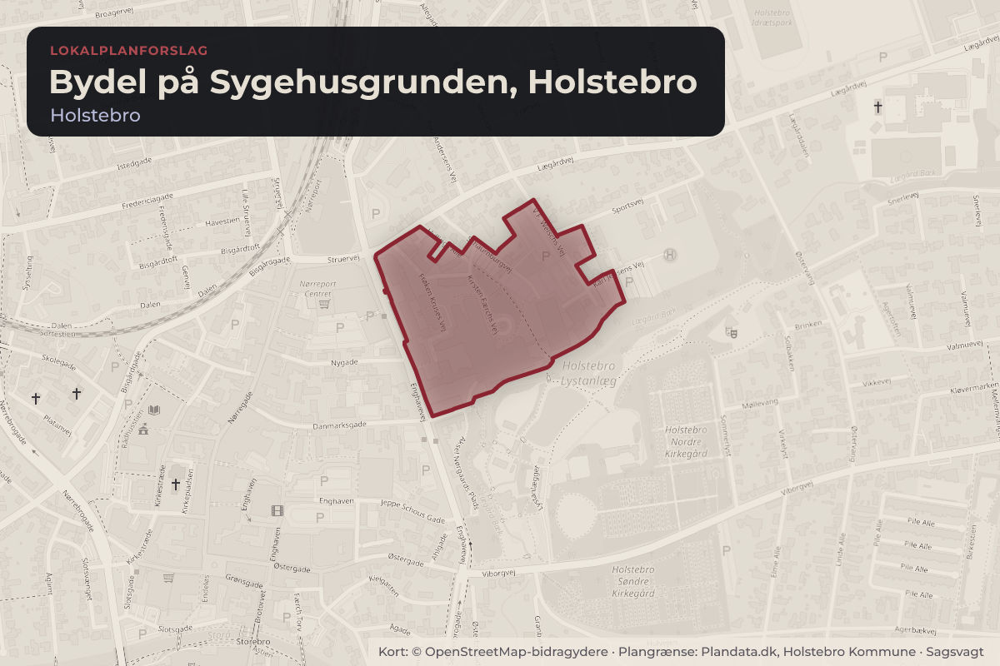
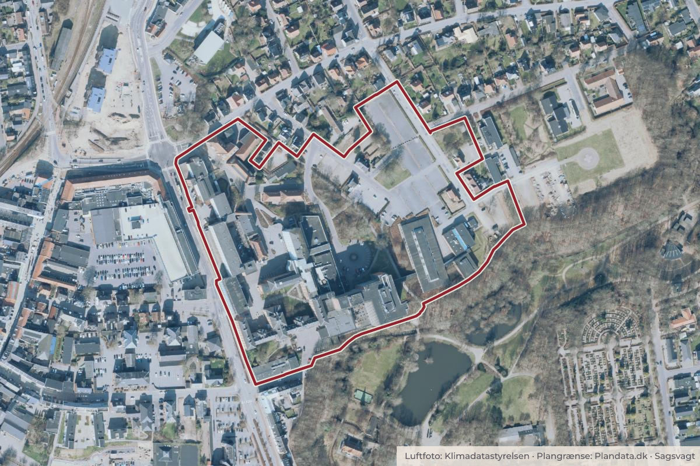

Besluttet 13. august, Teknisk Udvalg, Holstebro
Forslag til lokalplan nr. 1218, Bydel på Sygehusgrunden, Holstebro
Det indstilles, at: Lokalplan nr. 1218 vedtages som forslag og udsendes i offentlig høring i 4 uger under forudsætning af, at tillæg nr. 12 til kommuneplan 2025 også vedtages som forslag.

Kort: © OpenStreetMap-bidragydere. Plangrænse: Plandata.dk, Holstebro Kommune.

Har du et billede fra Bydel på Sygehusgrunden, Holstebro? Send det til os
Kort fortalt
- Hvem
- Teknisk Udvalg, Holstebro Kommune
- Hvornår
- Torsdag 13. august 2026
- Status
- Besluttet. Godkendt som indstillet. Udvalget ønsker, at administrationen frem til endelig behandling af lokalplanforslaget undersøger mulighederne for, hvordan der kan reguleres på detailhandelsbestemmelserne udover arealstørrelser.Beslutningen er forkortet her. Læs hele beslutningen
Læs hele sagen Kommunens egen tekst
Sagsfremstilling
AD/KJLJ - TU-BY
Administrationen har udarbejdet forslag til lokalplan nr. 1218 for omdannelse af den tidligere
sygehusgrund i Holstebro til en blandet bydel. Lokalplansforslaget er vedlagt som bilag. Der er
sideløbende udarbejdet forslag til kommuneplantillæg nr. 12, som tilpasser kommuneplanens
rammer, så de bringes i overensstemmelse med lokalplanen. En forudsætning for vedtagelse
og udsendelse af lokalplansforslaget er, at kommuneplantillægget vedtages som forslag.
Lokalplanen tager udgangspunkt i den eksisterende masterplan udarbejdet af Vandkunsten,
AART og Arealudviklingsselskabet Sygehusgrunden P/S og skal muliggøre omdannelsen af
den tidligere sygehusgrund til en åben, sammenhængende bydel med blandede funktioner,
herunder boliger, erhverv, grønne områder, kultur og uddannelse. Samtidig skal planen sikre
bevaring og transformation af områdets kulturhistorisk værdifulde bebyggelse, parkeringsnorm
samt etablering af en sammenhængende grøn struktur og attraktive byrum.
Lokalplanen tager afsæt i den udarbejdede masterplan.
Lokalplanområdet opdeles i følgende delområder (s.38 i lokalplan):
Delområde I (Bykvarteret) udlægges til centerformål med blandede byfunktioner,
herunder etageboligbebyggelse, kontor- og serviceerhverv, bymidte,
publikumsorienterede serviceerhverv, område til offentlige formål, byrum, grønne
områder, uddannelsesinstitutioner, kulturelle institutioner, offentlig administration og
parkering. Der gives mulighed for detailhandel i begrænset omfang med op til 1.000 m²
samlet areal i Bykvarteret, fordelt på udvalgsvarebutikker (maks. 150 m² pr. butik) og
dagligvarebutikker (maks. 200 m² pr. butik).
Delområde II (Villakvarteret) udlægges til boligformål, men fastlægges som
rammelokalplan, hvor ny bebyggelse forudsætter en efterfølgende byggeretsgivende
lokalplan.
Delområde III (tæt/lav boligområde i Villakvarteret) udlægges til tæt-lav boligbebyggelse.
Delområde IV (og delområde IV (Blandede boliger i Villakvarteret) udlægges til
etageboliger og tæt/lav boligbebyggelse.
Lokalplanen er byggeretsgivende for delområde I, III, IV.
En central forudsætning for udviklingen er bevarelse og transformation af den eksisterende
sygehusbebyggelse. Udvalgte bygninger udpeges som bevaringsværdige og må ikke nedrives,
mens størstedelen af den øvrige bebyggelse kun kan ændres i overensstemmelse med
lokalplanens transformationsprincipper.
Ny bebyggelse skal placeres inden for fastlagte byggefelter og tilpasses områdets struktur og
skala. Der fastsættes konkrete rammer for bygningshøjder, etageantal og arkitektonisk udtryk.
Lokalplanen fastlægger en sammenhængende grøn struktur, der sikrer forbindelse til
Lystanlægget, og udlægger centrale offentligt tilgængelige byrum, herunder Byparken, Bytorvet
og Aksel Nørgaards Plads.
Der gives mulighed for et sammenhængende net af gang- og cykelforbindelser, som kobler
området til midtbyen og banegården, med prioritering af bløde trafikanter. Vejadgang sker fra
Schaumburgvej, V. F. Welschs Vej og Aksel Nørgaards Plads. Lokalplanen fastsætter
parkeringsnormer for både bil- og cykelparkering og muliggør etablering af fælles
parkeringsløsninger samt parkering i konstruktion.
Administrationen vurderer, at lokalplanen i den foreliggende form ikke er omfattet af krav om
udarbejdelse af en miljørapport i henhold til lov om miljøvurdering af planer og programmer og
af konkrete projekter (VVM), lovbekendtgørelse nr. 4 af 3. januar 2023. Vurderingen er
begrundet i, at lokalplanen omfatter et allerede bymæssigt udbygget område, hvor
anvendelsen videreføres og omdannes inden for eksisterende byzone, og at planen ikke
muliggør projekter, der må antages at få en væsentlig indvirkning på miljøet.
Lokalplansforslaget foreslås en høringsperioden på 4 uger og vurderes at være tilstrækkelig,
da lokalplanforslaget bygger på en allerede kendt masterplan, som er resultatet af et grundigt
forarbejde omfattende flere dialogprocesser.
Indstilling
Det indstilles, at:
Lokalplan nr. 1218 vedtages som forslag og udsendes i offentlig høring i 4
uger under forudsætning af, at tillæg nr. 12 til kommuneplan 2025 også
vedtages som forslag.
Beslutning
Godkendt som indstillet.
Udvalget ønsker, at administrationen frem til endelig behandling af lokalplanforslaget
undersøger mulighederne for, hvordan der kan reguleres på
detailhandelsbestemmelserne udover arealstørrelser.
Annette Dietz (F) deltog ikke ved sagens behandling.
Kilde: Holstebro Kommune, Teknisk Udvalg, referat fra mødet torsdag 13. august 2026, punkt 3. Læs den originale sag hos kommunen.